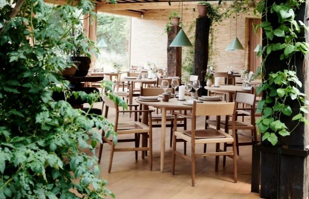
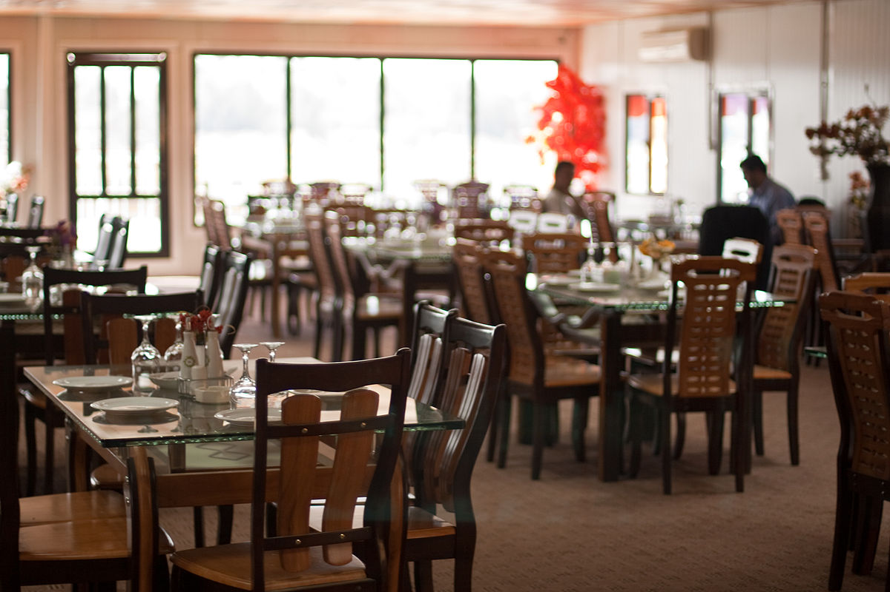

Veganos
Veganos
Restaurante exótico com decoração indiana que serve pratos orgânicos e sem ovos, além de menu diário variado.

Buffet farto de opções asiáticas e orientais veganas e ovo-lactovegetarianas em ambiente despretensioso.

Restaurante que oferece hambúrgueres veganos, fritas, beirutes, açaí e sobremesas em ambiente casual.